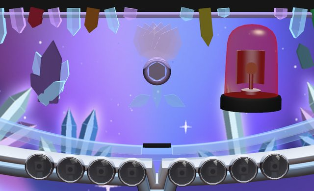
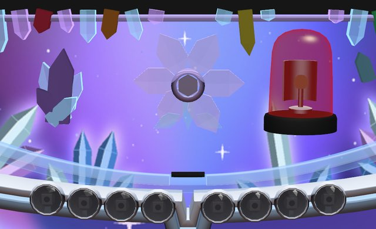
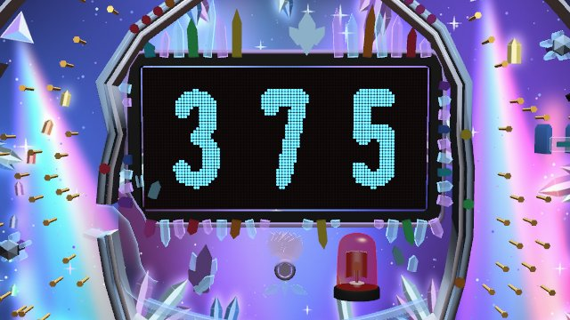
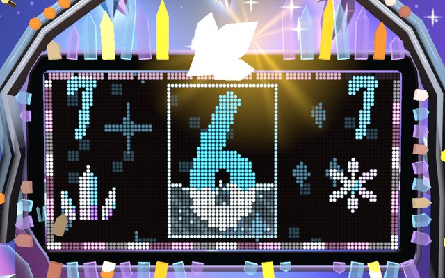
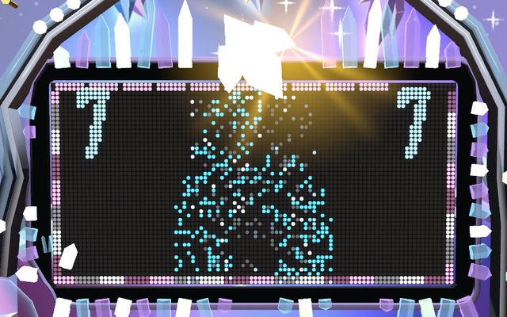
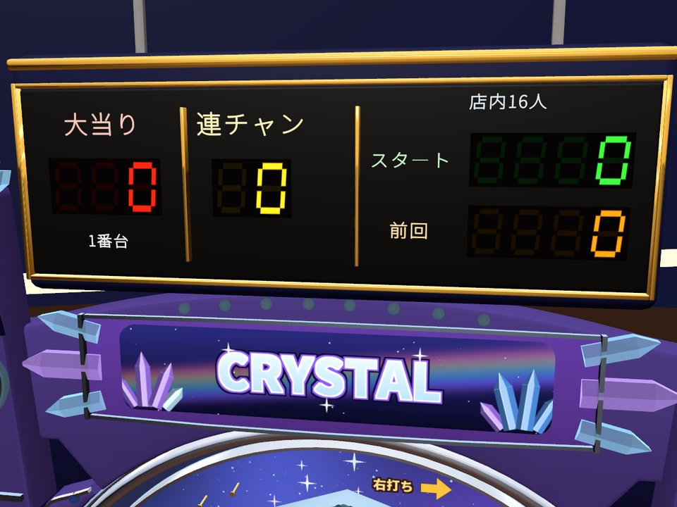

最后更新：2026-11-28（周六）
CRYSTAL
 机台整体
机台整体
新台。突破型的 ST 机。启动口大当有一半直接进入 Crystal RUSH（ST 12 转），另一半是 3R 通常，之后在时短 50 次里争取拉回。有右打。这是起伏很大的高手向机台，占台后借珠机上会显示「上級者向け・波が荒い台」（高手向、起伏大的机台）。岛的后排（北侧）西端共 4 台。
规格
| 大当概率 | 1/119.8 |
|---|
| RUSH 中 | 1/8.0 |
|---|
| RUSH | ST 12 转（Crystal RUSH） |
|---|
| 继续率 | 约 80% |
|---|
| 时短 | 50 次（3R 通常之后） |
|---|
| 突入率 | 约 67%（含拉回） |
|---|
| 回合 | 10R、3R（每 R 10 个计数） |
|---|
| 出珠量 | 10R 约 900 颗、3R 约 270 颗 |
|---|
| 赏球 | 启动口 3、电动入口 7、大奖口 9、入赏口 3 |
|---|
| 250 颗转的次数 | 约 49 次（试算，含止打） |
|---|
| 机械割 | 约 141%（试算） |
|---|
※突破型是只有一部分初次大当会进入 RUSH 的类型。时短 50 次的拉回概率约 34%。盈亏平衡线调查中。
大当分配
| 入赏口 | 10R（ST） | 3R（ST） | 3R 通常（时短 50 次） |
|---|
| 启动口 | 5% | 45% | 50% |
|---|
| 电动入口（電チュー） | 40% | 60% | 无 |
|---|
※777 是 10R，其他奇数是 3R 的 ST，偶数是 3R 通常。偶数也有升格机会。电动入口的大当全部是 ST。
普图、电动辅助
| 通常 | RUSH、时短 |
|---|
| 普图中奖 | 1/16 | 9/10 |
|---|
| 普图变动 | 12 秒 | 1.2 秒 |
|---|
| 电动入口开启 | 0.15 秒×1 次 | 1.6 秒×2 次 |
|---|
打法
| 左打 | 沿着一长排钉子到左上的风车。道钉坡度很陡，有 2 处会漏珠 |
|---|
| 右打 | 依次是右肩风车下面的通过闸门、右侧中间偏下的电动入口、右下横长的大奖口 |
|---|
模式（Crystal RUSH、时短）
| 模式 | 概率 | 辨认方式 |
|---|
| 通常 | 1/119.8 | 一般的边框。待机画面会滚动「◆ CRYSTAL ◆」 |
|---|
| Crystal RUSH | 1/8.0 | 光绕着液晶边框转，上边显示剩余次数。盘面的结晶之花会打开并发光 |
|---|
| 时短 | 1/119.8 | 蓝色边框。上边显示剩余次数 |
|---|
- ST 大当之后是 RUSH（ST 12 转、1/8.0）。12 转内中奖就再次进入 RUSH，没中就回到通常
- 进入时会出现「クリスタルRUSH!」（Crystal RUSH！）
- 3R 通常之后是时短 50 次。右打瞄准电动入口，电动入口中奖就进入 RUSH
盘面与役物
显示屏下方是结晶之花役物和警示灯。花在超级 Reach 以上会微微打开，大当中和 RUSH 中会完全打开并发光。
 盘面
盘面

结晶之花（花苞）

结晶之花（打开）
演出信赖度
※信赖度是出现该演出时最终中大当的比例（解析值，通常时）。50% 以上和确定用红字表示。
保留的颜色
| 颜色 | 信赖度 |
|---|
| 蓝 | 1.6% |
| 绿 | 6.8% |
| 红 | 30.4% |
| 金 | 63.3% |
| 虹 | 确定 |
Reach
| 演出 | 信赖度 |
|---|
| 普通 Reach | 3.1% |
| 超级 Reach | 25.5% |
| 全回转 | 确定 |
| 最终决战（PUSH） | 51.7% |
预告
| 颜色 | 结晶雪预告 | 水母群预告 |
|---|
| 整体（不分颜色） | 1.3% | 17.9% |
| 白 | 0.2% | 3.4% |
| 蓝 | 0.6% | 9.8% |
| 绿 | 1.7% | 22.5% |
| 红 | 6.0% | 52.1% |
| 金 | 22.7% | 83.3% |
| 虹 | 确定 | 确定 |
阶段预告
| 演出 | 信赖度 |
|---|
| 到第 1 级 | 4.1% |
| 到第 2 级 | 10.2% |
| 到第 3 级 | 33.6% |
| 到第 4 级 | 66.6% |
| 到第 5 级 | 90.9% |
拟似连
| 演出 | 信赖度 |
|---|
| ×2 | 5.7% |
| ×3 | 28.3% |
| ×4 | 50.7% |
变动开始
| 演出 | 信赖度 |
|---|
| 蓄力 | 1.5% |
| 逆转 | 3.9% |
| 颤抖 | 12.9% |
| 逐个 | 22.5% |
| 闪光 | 48.5% |
| 落下 | 1.8% |
| 吸入 | 2.0% |
| 从右边 | 10.5% |
| 角色推进 | 41.0% |
数字的转法
| 演出 | 信赖度 |
|---|
| 倒置 | 1.1% |
| 翻页 | 4.8% |
| 滚筒 | 8.4% |
| 洗牌 | 14.2% |
| 结晶 | 0.5% |
预兆（在上方奔跑的角色）
| 演出 | 信赖度 |
|---|
| 伙伴（3 只） | 1.0% |
| 大游行（6 只） | 2.5% |
| 金 | 12.5% |
| 虹 | 65.5% |
Reach 中的预告
| 演出 | 信赖度 |
|---|
| 结晶雪预告 | 14.8% |
| 水母群预告 | 30.2% |
超级 Reach 后半段
| 演出 | 信赖度 |
|---|
| 逐帧 | 11.4% |
| 重涂 | 18.6% |
| 攻击 | 33.9% |
| 结晶化 | 54.5% |
チャンス!（机会！）的颜色
| 颜色 | 信赖度 |
|---|
| 白 | 3.2% |
| 蓝 | 7.8% |
| 绿 | 16.8% |
| 红 | 42.9% |
| 金 | 69.9% |
| 虹 | 确定 |
Reach 的结束方式
| 演出 | 信赖度 |
|---|
| 骤停 | 6.5% |
| 滑动 | 18.8% |
| 退回 | 21.7% |
| 摇晃 | 9.4% |
| 最后一刻停住 | 29.4% |
确定演出
虹色保留、黑屏、变动开始时的警示灯、复活、冻结、全灭灯
演出解说
数字与转法
数字是浅蓝色的结晶形状的字。平常的转法是「结晶」，数字会斜着切换。

CRYSTAL 的数字
 「结晶」转法
「结晶」转法
保留
保留灯在显示屏下方。从金色开始算激热，虹色是确定。
预告
- 结晶雪预告偏弱。小结晶摇晃着落下，偶尔闪出十字光
- 水母群预告偏热。结晶水母群一张一缩着伞，从右往左游过去。后面有泡泡
- 两种都有 6 级颜色（白、蓝、绿、红、金、虹）。水母群的红色起算激热，虹色是确定
- 预告在 Reach 中也会出现。预兆是在上方条带里奔跑的小结晶和花
 结晶雪预告（金）
结晶雪预告（金）
 水母群预告（红）
水母群预告（红）
Reach
- Reach 和超级 Reach 的颜色是浅蓝色。普通 Reach 的演法是标准和逆转
- 超级 Reach 后半段的类型是逐帧、重涂、攻击、结晶化
- 超级 Reach 后半段开头出现的「チャンス!」（机会！），字的颜色代表期待度（白、蓝、绿、红、金、虹。虹色是确定）
- 结晶化：中间的数字被封进冰做的箱子里，从下往上冻住。光一闪全部冻住后，裂痕停一停又伸长。碎了就是大当，不行的话就带着裂痕融化
- 超级 Reach 中，点阵显示上的结晶和花会加油。右边的花从花苞打开，中奖的话会盛开（花瓣变成虹色）并旋转
- 最终决战时，点阵显示前面会出现 PUSH 按钮
结晶化（分镜）

1. 从下往上冻住
 2. 裂痕
2. 裂痕

3. 碎裂
警示灯
显示屏下方右边的旋转灯。转了就是大当。
大当时转动的时机
| 变动开始时 | 4% |
| Reach 成立时 | 18% |
| 揭晓时（Reach 的结局） | 78% |
特殊演出、隐藏要素与小知识
※有剧透。点击展开
特殊演出（大当确定）
| 演出 | 内容 |
|---|
| 黑屏 | 变动开始时长时间暗转，然后直接进入全回转 |
|---|
| 冻结 | 变动开始的同时一切停住、声音消失，闪光后直接进入全回转 |
|---|
| 全灭灯 | 液晶和机台的灯饰全部熄灭、声音也没了，闪光后直接进入全回转 |
|---|
| 变动开始时的警示灯 | 旋转一开始警示灯就转 |
|---|
| 虹 | 虹色保留、虹色预告（结晶雪、水母群） |
|---|
| 全回转 | 只在黑屏、冻结、全灭灯之后出现。333 或 777 对齐。转到最后，以虹色停下 |
|---|
| 复活 | 超级 Reach 里先装成没中，然后中奖 |
|---|
隐藏要素
- 升格机会：以偶数对齐的大当结束时会出现「昇格チャンス」（升格机会），对齐的数字重新转动。停在奇数就是「確変昇格!!」（确变升格！！）进入 RUSH，停在偶数就是「チャンスタイム!」（机会时间！）进入时短 50 次。3R 的 ST 里有 30% 是先以偶数对齐再升格，3R 通常里有 40% 是挑战升格但失败
- 保留先读：保留进来时，看到的颜色可能比真实颜色低 1～2 级。等待期间会一级一级往上升，没升完的部分会在变动开始时的机会提升里补上。变动开始时只是白色保留闪一下，就是假演出
- 机会区：先读的区间。前面有 2 个以上保留时才会出现。没中的时候，只有会变成超级 Reach 的那几转才出现
小知识
- 机会目 311：没有 Reach 的未中，停在 311 时会发出金光并弹跳。不会碰巧停在 311
- RUSH、时短中不会出现预告、阶段预告、拟似连和变动开始演出
数据计数器

数据计数器
机台上方有大当、连庄、开始、上次 4 项和店内人数。